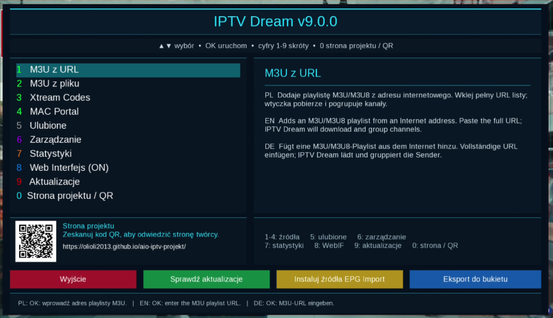
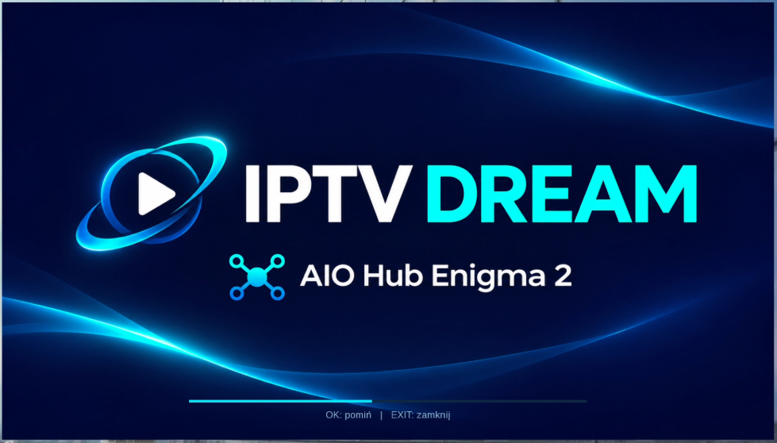

AIO TEAM · ENIGMA2 · 22.11.2026
IPTV Dream 9.0.0
Nowy ekran powitalny, przeglądarka multimediów LIVE/VOD, odtwarzacz Enigma2 i przebudowane operacje wykonywane w tle. Aktualizacja rozwija obsługę M3U/M3U8, Xtream Codes oraz portali MAC/Stalker.
Pakiety na stronie korzystają z dotychczasowej kontroli dostępu do pobrań AIO. Wtyczkę można też aktualizować z jej menu, wybierając „Sprawdź aktualizacje”.

Podgląd nowej wersji
Dwa oryginalne zrzuty
Zmiany w IPTV Dream 9.0.0
1. Intro IPTV Dream / AIO Hub Enigma 2
- Nowy ekran powitalny z logo i animowanym paskiem postępu.
- Czas animacji około 2,4 sekundy; przycisk OK pomija intro.
- Możliwość wyłączenia intro w ustawieniach, bez przerywania oglądanego kanału.
2. Przeglądarka LIVE i VOD
- Wspólna przeglądarka kanałów na żywo i materiałów VOD.
- Wyszukiwanie po nazwie i grupie, także bez polskich znaków.
- Filtry Wszystko / LIVE / VOD; stronicowanie po 100 elementów.
- Ulubione oraz historia ostatnio uruchomionych materiałów.
3. Ulepszony odtwarzacz
- Wykorzystuje systemowy odtwarzacz Enigma2.
- Obsługa napisów i ścieżek audio, o ile zapewniają je system i strumień.
- Przewijanie, gdy źródło to obsługuje; powrót STOP / EXIT.
- Poprawiona współpraca z MoviePlayer w OpenATV i OpenPLi.
4. Stabilność i zadania w tle
- Pobieranie i przetwarzanie list Xtream w tle.
- Eksport bukietów i instalacja źródeł EPG bez blokowania interfejsu.
- Ochrona przed spóźnionymi wynikami anulowanych zadań.
- Bezpieczniejszy, atomowy zapis konfiguracji.
5. Obsługa IPTV
- Nagłówki User-Agent, Referer i KODIPROP/EXTVLCOPT.
- Rozpoznawanie manifestów HLS i adresów względnych.
- Wspólny mechanizm referencji odtwarzania i eksportu.
- Usprawniona pamięć podręczna i obsługa błędów źródeł.
6. Diagnostyka komponentów
- Sprawdzanie Python i interfejsu GUI.
- Weryfikacja ServiceApp i exteplayer3.
- Kontrola EPGImport oraz WebIF.
- Łatwiejsze rozpoznawanie brakujących zależności.
7. Prywatna konfiguracja
- Atomowy zapis ustawień, historii i ulubionych.
- Odpowiednie uprawnienia plików.
- Odczyt konfiguracji bez ponownego zapisywania.
- Zachowanie dotychczasowych ustawień i portali w /etc/enigma2.
8. Porządki w kodzie
- Usunięcie dziewięciu historycznych, nieużywanych modułów.
- Ujednolicenie instalatora, aktualizatora oraz zawartości IPK/DEB.
- Rozszerzone testy automatyczne i obsługa błędów.
Pakiety 9.0.0 i kontrola integralności
Oba pliki porównano z oficjalnymi zasobami wydania GitHub. Dla tej wersji mają identyczną zawartość i tę samą sumę SHA-256.
49e8c4a7281c623fbbf98b9d7bf8dd16b2dd39e41145240f26a9fc02a6c6cfa049e8c4a7281c623fbbf98b9d7bf8dd16b2dd39e41145240f26a9fc02a6c6cfa0Oficjalne wydanie GitHub 9.0.0 · Sprawdź zgodność · Zgłoś błąd
Systemy Enigma2 z Pythonem 3. Pakiet wymaga enigma2, python3-requests i python3-twisted-core; zaleca python3-twisted-web, python3-pillow i EPGImport. Python 2 nie jest obsługiwany. Serwis 4097 korzysta z odtwarzacza systemowego, a 5002 wymaga ServiceApp z exteplayer3.
Instalacja i aktualizacja
Zainstalowaną wcześniej wtyczkę można zaktualizować z poziomu IPTV Dream, wybierając Sprawdź aktualizacje. Można również pobrać pakiet IPK/DEB powyżej i przesłać go do /tmp odbiornika.
opkg install /tmp/enigma2-plugin-extensions-iptvdream_9.0.0_all.ipkdpkg -i /tmp/enigma2-plugin-extensions-iptvdream_9.0.0_all.debWybierz format obsługiwany przez swój system. Funkcje odtwarzania zależą od kodeków, konfiguracji tunera i źródła IPTV. Po instalacji może być konieczny restart GUI.
Historia zmian 8.0.1 — wcześniejsze wydanie
W wersji 8.0.1 poprawiono eksport kanałów bez nazw N/A, generowanie referencji Enigma2, obsługę MAC/Stalker, duplikatów w bouquets.tv oraz WebIF i EPG. Pełny historyczny changelog pozostaje w repozytorium projektu.
Wydanie archiwalne 8.0.1